آمادهسازی
ثبتنام، مدارک و ردهبندی
 PAHLEVAN.معرفی تصویری / آبان ۱۴۰۵
PAHLEVAN.معرفی تصویری / آبان ۱۴۰۵ثبتنام، پذیرش، قرعه و داوری را به هم متصل کنید؛
تا ورزشکار، مربی و تیم اجرایی یک مسیر روشن را دنبال کنند.
ثبتنام، مدارک و ردهبندی
پذیرش، وزنکشی و قرعه
زمان، امتیاز و تأیید نتیجه
کارنامه، مقام و سابقهٔ باشگاه
پیگیری پرونده و وضعیت اعضای تیم
هماهنگی مرحلههای برگزاری رویداد
ثبت تصمیمها و پیگیری نتیجهٔ مبارزه
PAHLEVAN.پیش از مسابقهورزشکار رویدادها را با جستوجو و فیلتر پیدا میکند و وضعیت ثبتنام را میبیند. تاریخ شمسی و اطلاعات محل برگزاری، تصمیم برای حضور را سادهتر میکنند.
تصویر تمام صفحه در پوشهٔ همراه ↗ PAHLEVAN.پیش از مسابقه
PAHLEVAN.پیش از مسابقهورزشکار، مربی، برگزارکننده و عامل اجرایی، مسیر کاری متناسب با مسئولیت خود دارند. ثبتنام حساب و تکمیل پرونده از یک نقطه آغاز میشود.
تصویر تمام صفحه در پوشهٔ همراه ↗ PAHLEVAN.پیش از مسابقه
PAHLEVAN.پیش از مسابقهبرگزارکننده سبک آزاد، فرنگی یا آزاد بانوان، ردهٔ سنی و وزنها را مشخص میکند. مبلغ ثبتنام و تخفیف کنار پرونده قرار میگیرند و تلاش پرداخت، مغایرت و بازپرداخت مسیر ثبتشده دارند. مهلت و شرایط اعتراض نیز برای همان رویداد تعیین میشوند تا ثبتکننده و مسئول رسیدگی، وضعیت و پاسخ را پیگیری کنند.
تصویر تمام صفحه در پوشهٔ همراه ↗ PAHLEVAN.پیش از مسابقه
PAHLEVAN.پیش از مسابقهورزشکار ردهٔ مجاز را انتخاب میکند و وضعیت درخواست خود را در پنل میبیند. ظرفیت، فهرست انتظار و انصراف، در گردش ثبتنام مدیریت میشوند.
تصویر تمام صفحه در پوشهٔ همراه ↗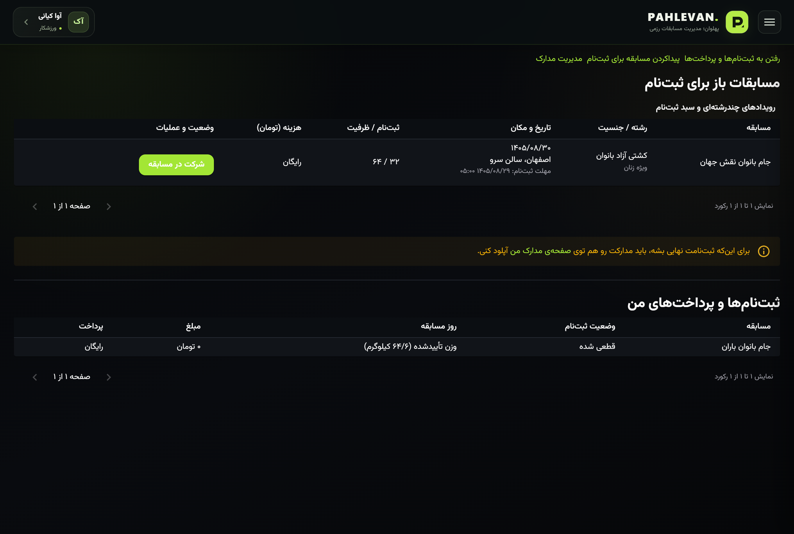
PAHLEVAN.پیش از مسابقهمدارک لازم برای هر رویداد تعیین میشوند و ورزشکار فایلهای پرونده را بارگذاری میکند. مسئول بررسی میتواند تأیید یا رد مدرک و نیاز به اصلاح را ثبت کند.
تصویر تمام صفحه در پوشهٔ همراه ↗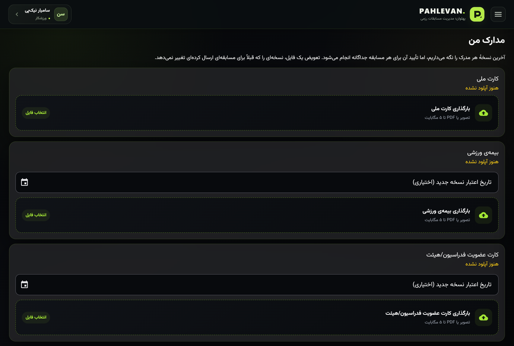
PAHLEVAN.پیش از مسابقهمربی فهرست ورزشکاران باشگاه را یکجا مدیریت میکند. ورود از Excel یا CSV، ثبت گروهی و کنترل ردهها، کار تکراری پیش از مسابقه را کاهش میدهند.
تصویر تمام صفحه در پوشهٔ همراه ↗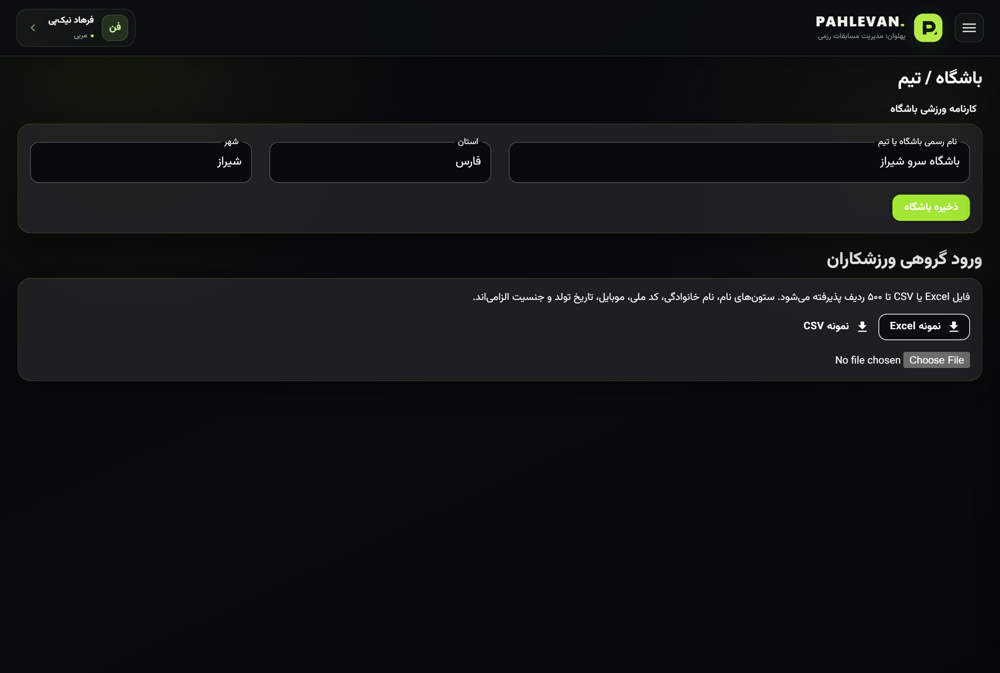
PAHLEVAN.پیش از مسابقهبرگزارکننده امکانات موردنیاز، از ثبتنام و پذیرش تا داوری و گزارش، را برای هر رویداد انتخاب میکند. رویدادهای فردی، گروهی و چندرشتهای به تنظیمات و قواعد متناسب خود وابستهاند و تیم اجرایی ابزارهای همان مسابقه را میبیند؛ این تنظیمات جایگزین قواعد اختصاصی مصاف تیمی کشتی نیستند.
تصویر تمام صفحه در پوشهٔ همراه ↗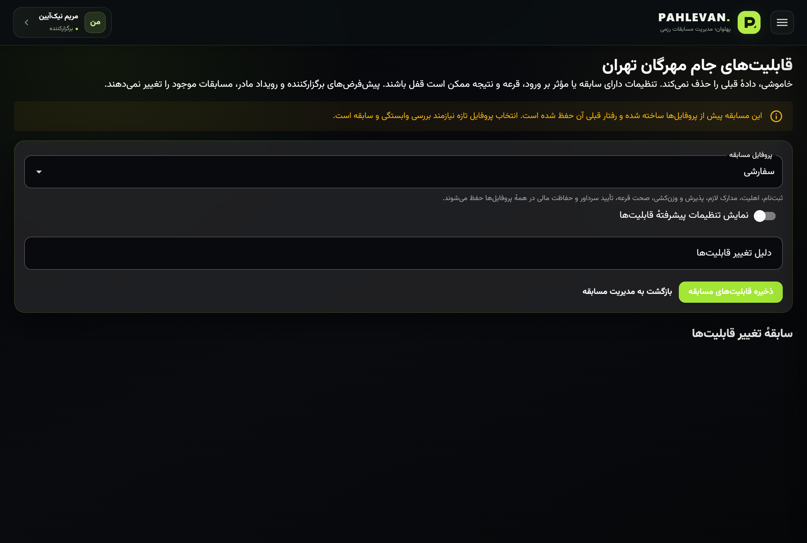
PAHLEVAN.روز مسابقهعوامل، ثبتنام و مدارک را در صف پذیرش بررسی میکنند و حضور ورزشکار را ثبت میکنند. پذیرش گروهی و اسکن QR کارت، رسیدگی به صف را سریعتر میکنند.
تصویر تمام صفحه در پوشهٔ همراه ↗ PAHLEVAN.روز مسابقه
PAHLEVAN.روز مسابقهپروتکل پذیرش، نوبت روز اول و دوم، بررسی مدارک و مجوز پزشک منصوب را به حضور در مسابقه متصل میکند. ابلاغ نمونهگیری خصوصی است و اطلاعات بالینی در صفحهٔ عمومی ثبت نمیشوند.
تصویر تمام صفحه در پوشهٔ همراه ↗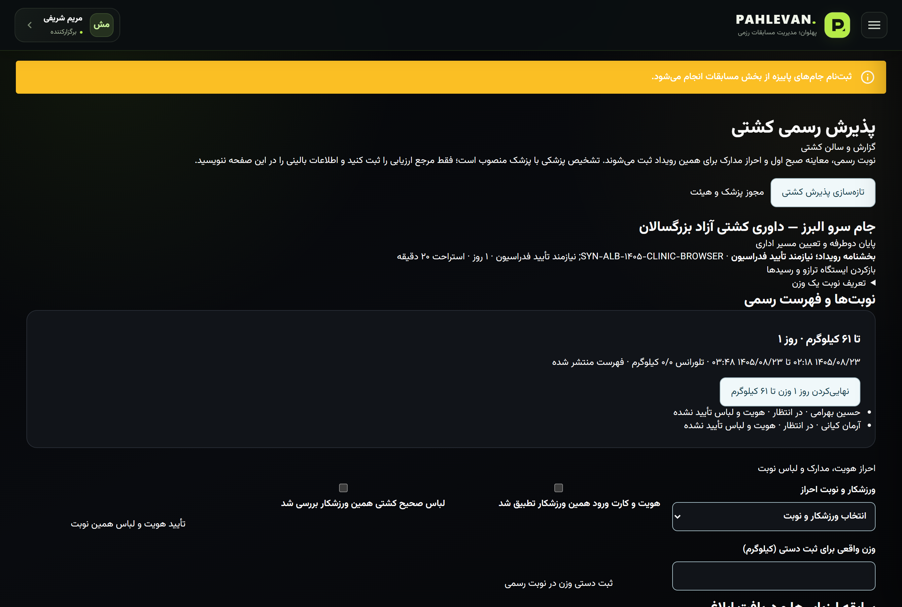
PAHLEVAN.روز مسابقهنوبت، وزن ثبتشده، نتیجهٔ توزین و عامل ثبتکننده در پروندهٔ ورزشکار نگهداری میشوند. گردش ورود دستی و خواندن ترازوهای پشتیبانیشدهٔ A&D همراه بارکدخوان وجود دارد. تلاشهای توزین قابل پیگیریاند، رسید صادر میشود و سابقه به تصمیم پذیرش و ورود به قرعه متصل میماند.
تصویر تمام صفحه در پوشهٔ همراه ↗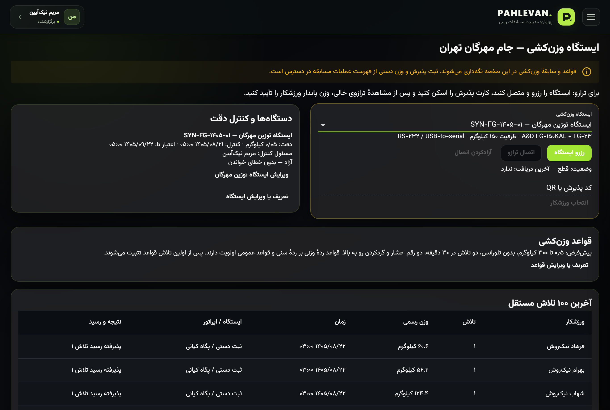
PAHLEVAN.روز مسابقهقالب تکحذفی، دوحذفی، دورهای یا شانس مجدد متناسب با رویداد انتخاب میشود؛ در کشتی مسیر دورهای یا حذفی با شانس مجدد و برنز مشخص است. مبنای سید از قرعهٔ تصادفی جداست. سیدها، جداسازی همباشگاهیها و استراحتها پیش از تأیید بازبینی میشوند؛ نسخهها محفوظاند و پس از انتشار، ورزشکار، مربی و عوامل به جدول و خروجی آن دسترسی دارند.
تصویر تمام صفحه در پوشهٔ همراه ↗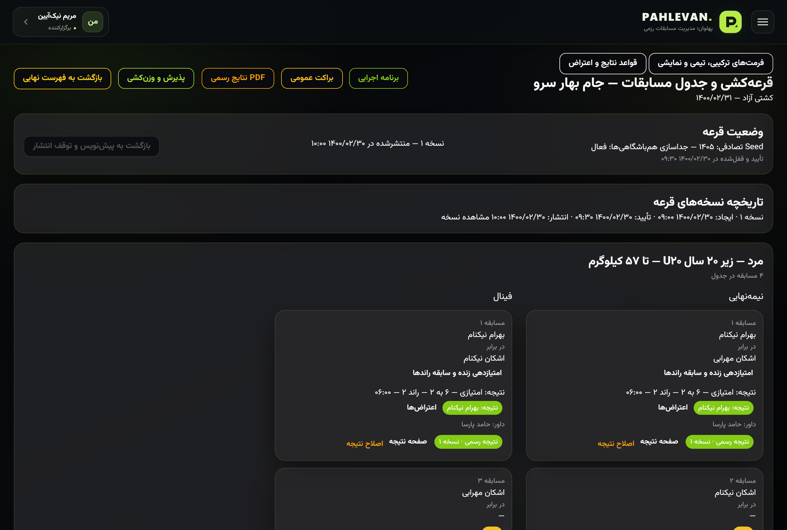
PAHLEVAN.روز مسابقهخطوط جدول، صعود برنده و انتقال بازنده را نشان میدهند؛ جستوجو، فیلتر و بزرگنمایی هم در دسترساند. تصویر این سند، همهٔ ردیفها تا شانس مجدد، برنز و فینال را در بر میگیرد.
تصویر تمام صفحه در پوشهٔ همراه ↗ PAHLEVAN.روز مسابقه
PAHLEVAN.روز مسابقهمبارزهها میان تشکها و زمانهای اجرا برنامهریزی میشوند و تداخلها کنترل میشوند. برنامهٔ عمومی، نوبت بعدی و تغییرات اجرا را در اختیار مخاطبان قرار میدهد.
تصویر تمام صفحه در پوشهٔ همراه ↗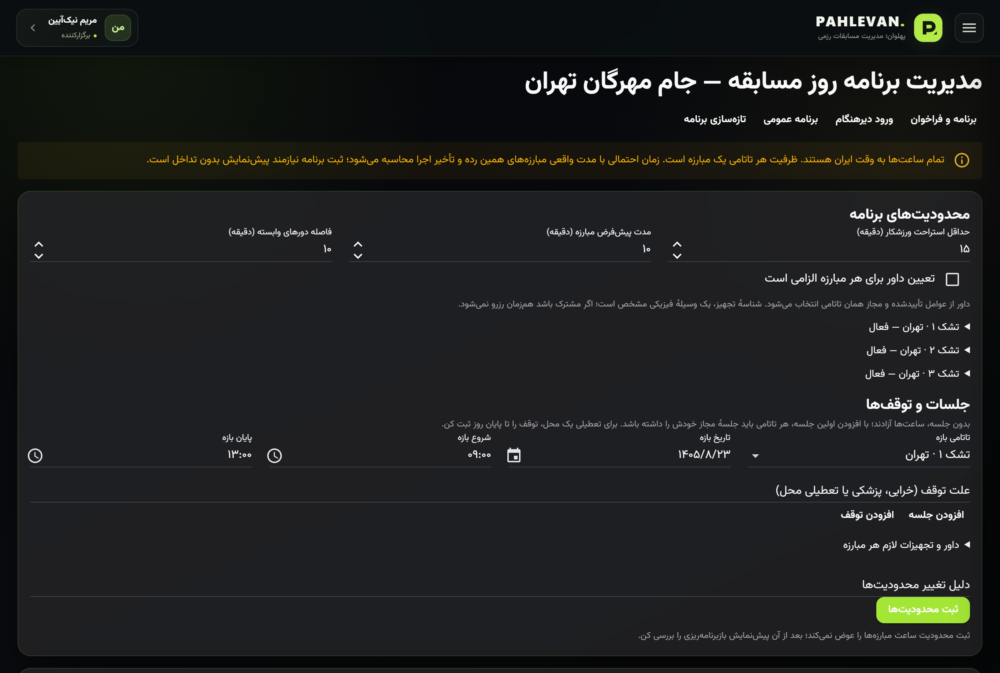
PAHLEVAN.روز مسابقهبرگزارکننده عوامل اجرایی و داوران را به رویداد اختصاص میدهد. مسئولیت و دسترسی هر فرد در همان مسابقه مشخص میشود تا کارها قابل پیگیری باشند.
تصویر تمام صفحه در پوشهٔ همراه ↗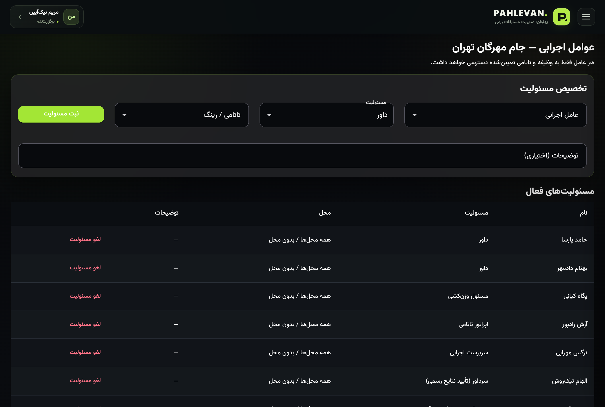
PAHLEVAN.روز مسابقهناحیههای سالن و مجوز ورود افراد در رویداد تعریف میشوند. کنترل QR و سابقهٔ بررسی مجوز، رسیدگی به ورود را از فهرستهای پراکنده جدا میکنند.
تصویر تمام صفحه در پوشهٔ همراه ↗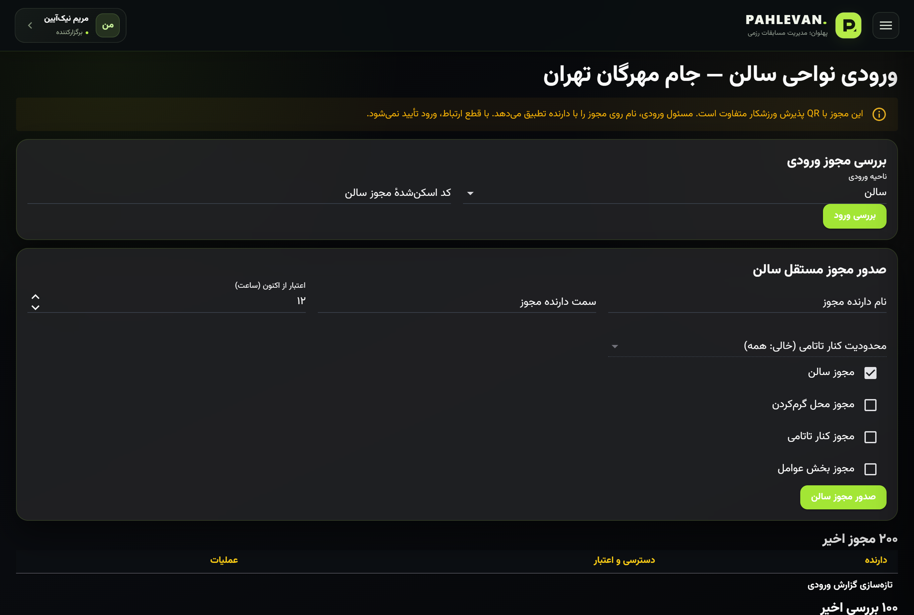
PAHLEVAN.داوری و نتیجهداور امتیاز فنی، برتری، ضربهٔ فنی، ساعت، استراحت و دورهها را در یک میز ثبت و کنترل میکند. مدت دوره، رفع تساوی و رویدادهای فعالیت یا پارتر به پروفایل انتخابشده وابستهاند. در سازوکار چالش، بازبینی زاویهها، حرکت آهسته و فریمها و تصمیم نمایندهٔ مستقل همراه اثر امتیازی در پروندهٔ مبارزه ثبت میشود.
تصویر تمام صفحه در پوشهٔ همراه ↗ PAHLEVAN.داوری و نتیجه
PAHLEVAN.داوری و نتیجهداور نتیجهٔ اولیه را ثبت میکند و سرداور منصوبشده آن را تأیید یا رد میکند. برای رویدادهای دارای هیئت سهنفره، مسئولیت اعضا و مسیر بازبینی تصمیم مشخص است تا نتیجهٔ نهایی از مسیر مجاز اعلام شود.
تصویر تمام صفحه در پوشهٔ همراه ↗ PAHLEVAN.داوری و نتیجه
PAHLEVAN.داوری و نتیجهورزشکار و مربی نتیجهٔ تأییدشده را مبنای پیگیری صعود و رتبه قرار میدهند. مسئول مجاز میتواند اصلاح نتیجه را با دلیل ثبت کند تا تغییر تصمیم برای افراد مسئول قابل پیگیری و توضیح باشد.
تصویر تمام صفحه در پوشهٔ همراه ↗ PAHLEVAN.تماشای مسابقه
PAHLEVAN.تماشای مسابقهصفحهٔ عمومی پخش، منبع تصویری تشک و اطلاعات مسابقه را کنار هم قرار میدهد. مخاطب میتواند اجرای رویداد را از مرورگر دنبال کند.
تصویر تمام صفحه در پوشهٔ همراه ↗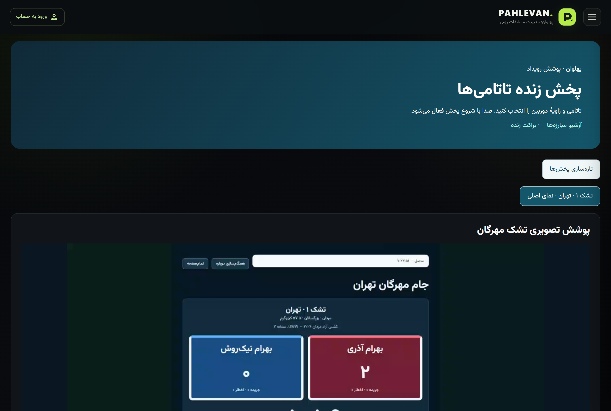
PAHLEVAN.تماشای مسابقهمسئول رسانه منابع تصویر و انتشار ویدئوها را مدیریت میکند و هر فیلم را به رویداد یا ورزشکار مربوط پیوند میدهد. مخاطب به فیلمهای منتشرشده میرسد؛ دریافت و آمادهسازی فیلم به سرویس رسانهٔ تنظیمشده نیاز دارد.
تصویر تمام صفحه در پوشهٔ همراه ↗ PAHLEVAN.تماشای مسابقه
PAHLEVAN.تماشای مسابقهنمایشگر عمومی، امتیاز و وضعیت مبارزه را برای تماشاگر نشان میدهد. برنامهٔ رویداد و نتیجهها، بدون ورود به پنل اجرایی در دسترس قرار میگیرند.
تصویر تمام صفحه در پوشهٔ همراه ↗ PAHLEVAN.تماشای مسابقه
PAHLEVAN.تماشای مسابقهمرکز سالن، نمایشگرها، فراخوان و صف اجرای مراسم را در یک نقطه جمع میکند. عامل اجرایی از همین مسیر، نمایش مناسب هر بخش سالن را انتخاب میکند.
تصویر تمام صفحه در پوشهٔ همراه ↗ PAHLEVAN.تماشای مسابقه
PAHLEVAN.تماشای مسابقهفهرست نهایی، نتایج، براکت و جدول مدالها قابل خروجیگرفتناند. گواهی شرکت و حکم قهرمانی نیز از اطلاعات ثبتشدهٔ رویداد تولید میشوند.
تصویر تمام صفحه در پوشهٔ همراه ↗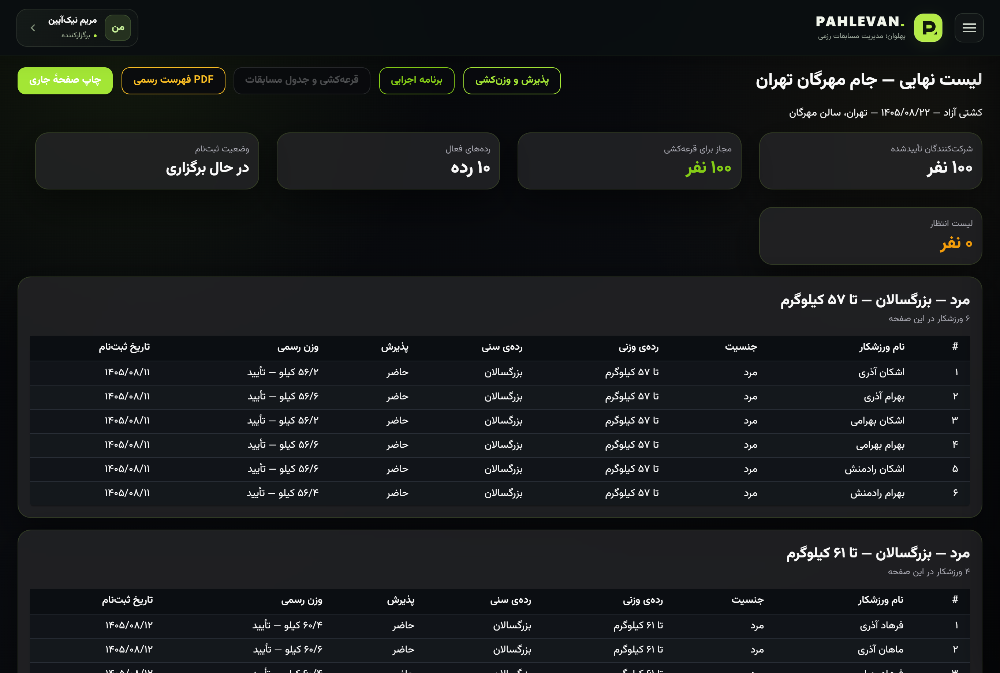
PAHLEVAN.مدیریت ورزشفدراسیون، استان، هیئت و باشگاه در ساختار سازمانی تعریف میشوند. مسئول میتواند اختیار هر فرد را برای همان بخش و همان نوع عملیات تعیین کند.
تصویر تمام صفحه در پوشهٔ همراه ↗ PAHLEVAN.مدیریت ورزش
PAHLEVAN.مدیریت ورزشپروندهٔ عضویت، وضعیت تأیید، تعرفه و گردش مالی سازمان در یک مسیر قرار میگیرند. رسید و تصمیم بررسی کنار همان پرونده نگهداری میشوند.
تصویر تمام صفحه در پوشهٔ همراه ↗ PAHLEVAN.مدیریت ورزش
PAHLEVAN.مدیریت ورزشکارت ورزشکاری، بیمه و مدارک مرتبط میتوانند با وضعیت و اعتبار مشخص در پرونده قرار بگیرند. درخواست و نتیجهٔ استعلام در نرمافزار ثبت میشوند؛ اتصال به مرجع ملی به توافق و دسترسی همان مرجع وابسته است.
تصویر تمام صفحه در پوشهٔ همراه ↗ PAHLEVAN.مدیریت ورزش
PAHLEVAN.مدیریت ورزشمحرومیت با بازهٔ زمانی، دلیل و دامنهٔ رویداد ثبت میشود و در کنترل ورود اثر میگذارد. درخواست مجوز مسابقه نیز مسیر بررسی و ثبت تصمیم جداگانه دارد.
تصویر تمام صفحه در پوشهٔ همراه ↗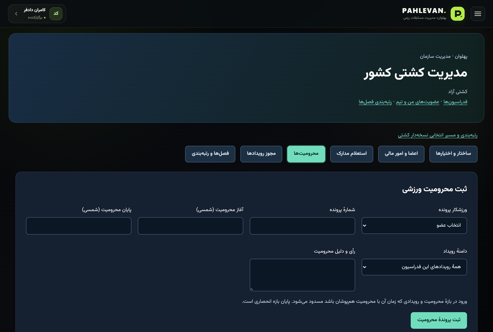
PAHLEVAN.مدیریت ورزشمسئول سازمان رویدادهای فصل و قواعد امتیازدهی را مشخص میکند و رتبهبندی را برای مرور و انتشار آماده میسازد. ورزشکار و مربی میتوانند جایگاهها را بر مبنای آییننامهٔ مصوب همان سازمان پیگیری کنند.
تصویر تمام صفحه در پوشهٔ همراه ↗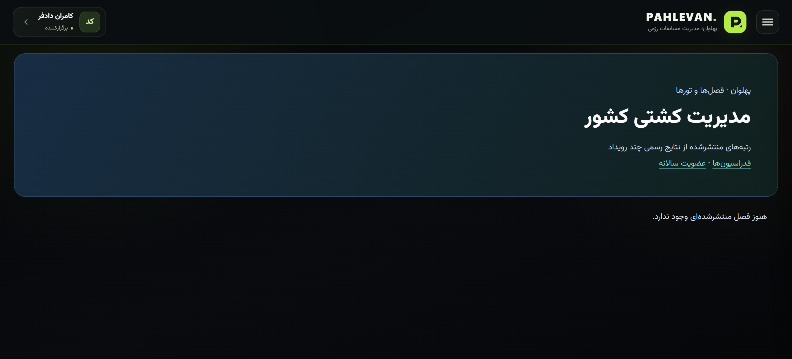
PAHLEVAN.مدیریت ورزشمسئول فنی مرجع بخشنامه، بازهٔ محاسبه و مرحلههای انتخابی را مشخص میکند و پیشنمایش چرخه را میبیند. این ابزار به مرور مسیر انتخابی و قواعد رتبهبندی کمک میکند؛ معرفی خودکار به تیم ملی انجام نمیشود.
تصویر تمام صفحه در پوشهٔ همراه ↗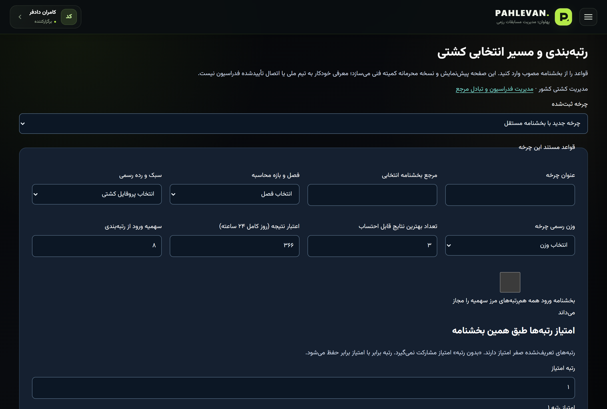
PAHLEVAN.مدیریت ورزشمربی وضعیت ثبتنام، عملکرد و مدالهای ورزشکاران خود را یکجا میبیند. فهرست باشگاه، نتیجهها و مسئولیتهای رویدادی از همین پنل دنبال میشوند.
تصویر تمام صفحه در پوشهٔ همراه ↗ PAHLEVAN.مدیریت ورزش
PAHLEVAN.مدیریت ورزشرویدادهای فعال، درخواستها و مسیر عملیات در پنل برگزارکننده جمع میشوند. دسترسی به ثبتنام، پذیرش، عوامل، قرعه و اجرا از یک میز کار انجام میشود.
تصویر تمام صفحه در پوشهٔ همراه ↗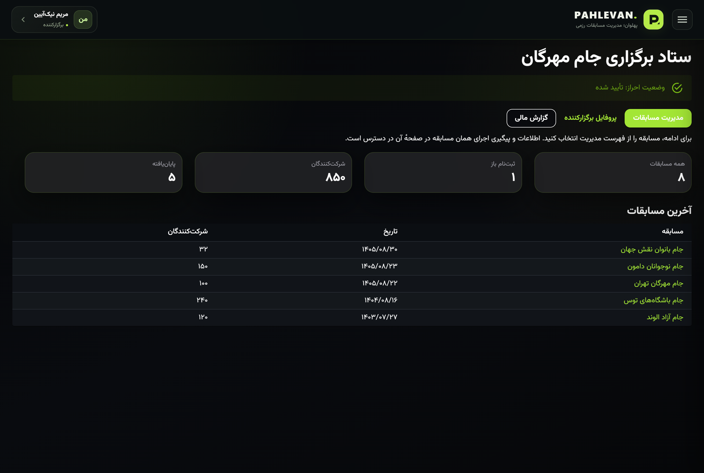
PAHLEVAN.مدیریت ورزشدر پروتکل مستقل کشتی، ترکیب اصلی و ذخیره، ترتیب اوزان و مصاف دو تیم تعریف میشوند. ساخت لیگ یکدورهای تا ۱۶ تیم و محاسبهٔ رتبه وجود دارد؛ آییننامهٔ داخلی و پذیرش پزشکی روزانهٔ تیمی جدا بررسی میشوند.
تصویر تمام صفحه در پوشهٔ همراه ↗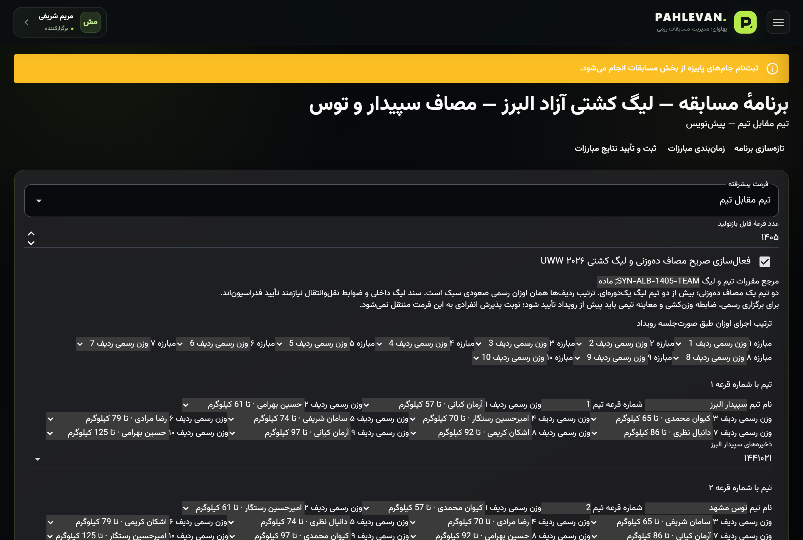
PAHLEVAN.سابقه و اعتمادکارنامه، نتیجهها و مقامهای ثبتشدهٔ ورزشکار را در رویدادهای مختلف کنار هم قرار میدهد. جستوجو از نتیجهٔ یک مسابقه به سابقهٔ همان ورزشکار ادامه پیدا میکند.
تصویر تمام صفحه در پوشهٔ همراه ↗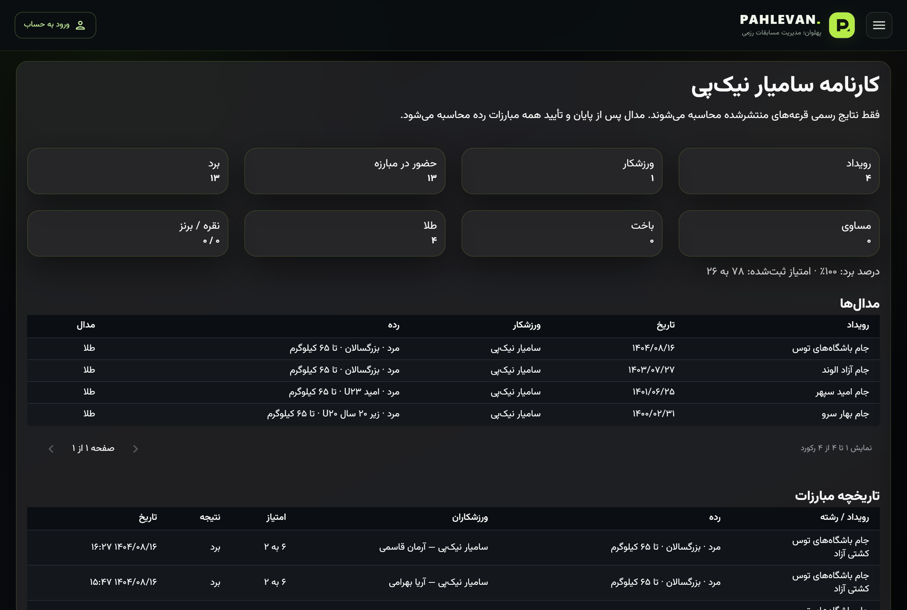
PAHLEVAN.سابقه و اعتمادنتیجههای ورزشکاران به نمای باشگاه متصل میشوند تا عملکرد جمعی دیده شود. جدول مدالها و امتیاز تیمی، مقایسهٔ باشگاهها و مربیان را در سطح رویداد فراهم میکنند.
تصویر تمام صفحه در پوشهٔ همراه ↗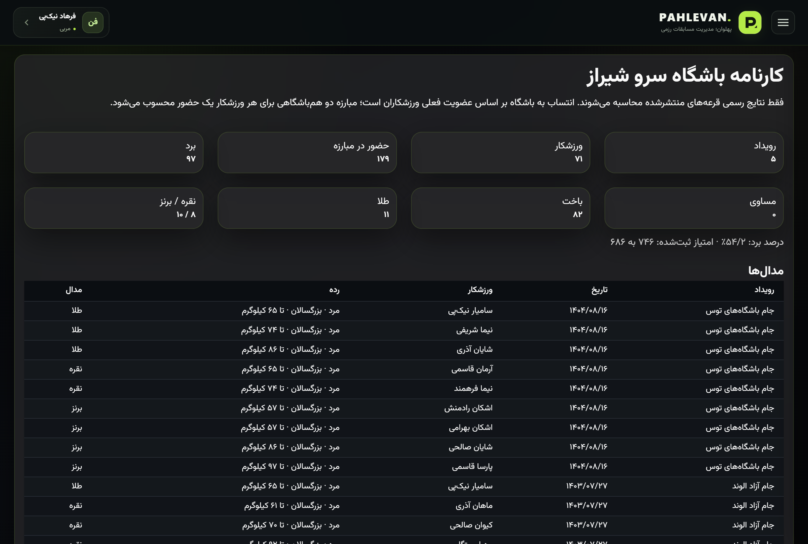
PAHLEVAN.سابقه و اعتمادورزشکار مسابقههای خود، وضعیت حضور و خلاصهٔ عملکرد را از پنل شخصی میبیند. مدارک، ثبتنامها و پیوند کارنامه در همان مسیر در دسترساند.
تصویر تمام صفحه در پوشهٔ همراه ↗ PAHLEVAN.سابقه و اعتماد
PAHLEVAN.سابقه و اعتمادمدیر سامانه به نمای کلی حسابها و رویدادها و صف بررسی نقشها دسترسی دارد. پنل مدیریت از پنل سازمانی فدراسیون جداست تا دامنهٔ مسئولیت روشن بماند.
تصویر تمام صفحه در پوشهٔ همراه ↗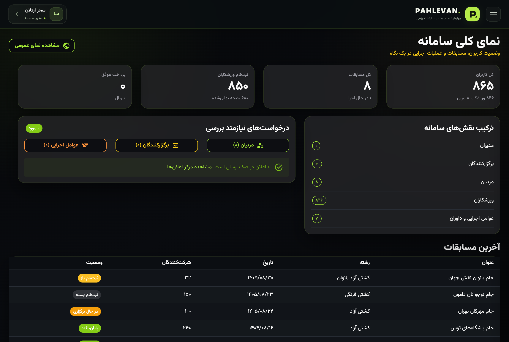
PAHLEVAN.سابقه و اعتمادنمایش عمومی اطلاعات و انتشار ویدئو، قواعد رضایت و سطح دسترسی دارند. درخواست خروجی اطلاعات و حذف حساب، مسیر رسیدگی مشخص خود را دنبال میکنند.
تصویر تمام صفحه در پوشهٔ همراه ↗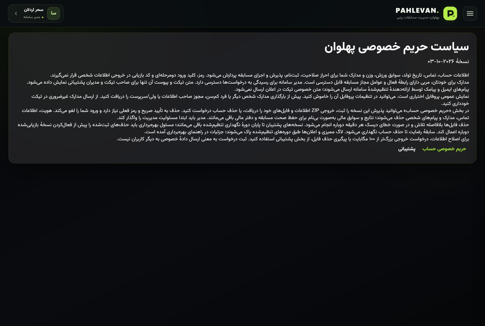
PAHLEVAN.سابقه و اعتمادکاربر تیکت خصوصی و پاسخها و وضعیت رسیدگی را در همان پرونده دنبال میکند. برای اعلانها و ارتباطات از سرویس داخلی بله استفاده شده است؛ تحویل به تنظیم و دسترسی سرویس وابسته است. زیرساخت پیامک و ایمیل حفظ شده، اما در حالت فعلی بله ارسال مستقیم SMTP و پیامک متوقف است.
تصویر تمام صفحه در پوشهٔ همراه ↗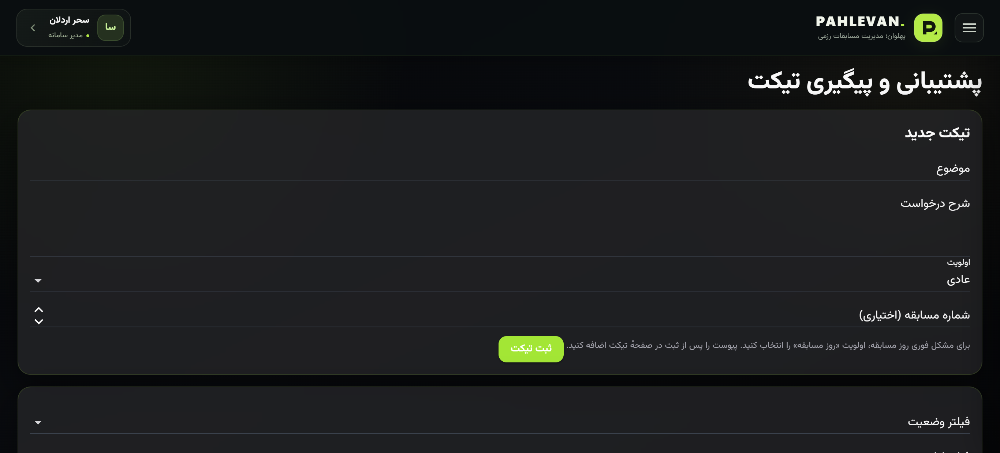
PAHLEVAN.نسخهٔ بعدداشبورد جامع ماهانهٔ فدراسیون در حال توسعه است و برای نسخهٔ بعد آماده میشود.
تایملاین تصویری سالبهسال ورزشکار در حال توسعه است و برای نسخهٔ بعد آماده میشود.
این دو مورد برنامهٔ اعلامشده برای نسخهٔ بعد هستند؛ در تصاویر فعلی محصول نمایش داده نشدهاند.PAHLEVAN.فراتر از کشتیپهلوان با رویکرد چندرشتهای ساخته شده و برای مدیریت مسابقات رشتههای گوناگون، از جمله کاراته، کونگفو، تکواندو، جودو و کشتی، قابل استفاده و پیکربندی است. در این گزارش فقط روی کشتی آزاد، فرنگی و آزاد بانوان تمرکز کردهایم.
حسابها، ثبتنام، مدارک، باشگاه، عوامل، برنامهریزی و گزارشها، پایهٔ مشترک مدیریت رویدادهای ورزشی هستند.
امتیازدهی، قالب مبارزه و مقررات هر رشته به بسته و تنظیمات همان رشته وابستهاند. این گزارش، تأیید کامل آییننامه یا اتصال تجهیزات تمام رشتهها نیست.
PAHLEVAN.تداوم اجرای مسابقهدر نصب محلی، شبکهٔ داخلی سالن میتواند ارتباط ایستگاهها با میزبان را بدون اینترنت برقرار نگه دارد. ایستگاه آفلاین نیز پس از آمادهسازی و تأیید، عملیات مجاز را هنگام قطع ارتباط در صف دستگاه نگه میدارد.
پذیرش، تلاش وزنکشی دستی با دلیل، درخواست ثبتنام خود یا شاگرد مجاز و پیشنویس نتیجه در صف محلی ذخیره میشوند.
با بازگشت ارتباط، مجوز و نسخهٔ رکورد بررسی میشوند؛ عملیات تکراری دوباره ثبت نمیشود و تعارض برای تصمیم مسئول مشخص میماند. تأیید رسمی نتیجه، داوری تخصصی، پرداخت و انتشار رسمی به مسیر اصلی متصل نیاز دارند.
PAHLEVAN.معیارهای انتخاباین فهرست، مزیتهای مستند پهلوان برای مقایسه هنگام انتخاب نرمافزار است. امکانات و هزینهٔ هر رقیب باید بر اساس نسخه و قرارداد همان محصول بررسی شوند.
تقویم رویداد، ثبتنام، پذیرش و کارهای تیم اجرایی به هم متصلاند تا پیگیری مسابقه از اطلاعات پراکنده به مسیر مشخص برسد.
ثبتنام، مدارک، پذیرش، توزین، قرعه، داوری، نتیجه و کارنامه در یک مسیر متصل؛ مناسب مقایسه با راهکارهای محدود به یک بخش.
امکان اجرای میزبان محلی و شبکهٔ سالن، همراه صف عملیات پشتیبانیشده برای کاهش وابستگی روز مسابقه به اینترنت.
بله، مسیر فعلی اعلانهاست؛ راهاندازی ارتباطات به سرویس تنظیمشدهٔ داخلی متکی است. در حالت بله، ارسال مستقیم SMTP و پیامک متوقف میماند.
انتخاب صریح قواعد رشته، حفظ نسخهٔ قرعه و سوابق تصمیمها، همراه دسترسی متناسب با مسئولیت هر عامل.
امکان گفتوگو دربارهٔ نیازهای بومی، پشتیبانی و توسعهٔ متناسب با رویداد، از راههای تماس درجشده در همین گزارش.
PAHLEVAN.نسخهٔ آنلاین نمایشیبرای بررسی و آزمایش نرمافزار، نسخهٔ آنلاین دمو در دسترس است. این نسخه برای معرفی و تست است و دادهٔ آمادهٔ مسابقه ندارد؛ اطلاعات و رویدادهای موردنیاز آزمایش را خودتان وارد کنید.
ورود به نسخهٔ دمو ↗pahlevan-erfan-preview.onrender.comبرای دریافت دسترسی آزمایشی با توسعهدهنده تماس بگیرید. برای آزمایش، اطلاعات ساختگی وارد کنید و پیام یا پرداخت واقعی انجام ندهید. ارتباط در تلگرام.
PAHLEVAN.ارتباط با توسعهدهنده
توسعهدهندهٔ نرمافزار پهلوان
ایتا و بله: با شمارهٔ ۰۹۹۱۸۷۹۰۹۶۹ در دسترس هستم.
این نسخه، آغاز مسیر توسعهٔ محصول است و با تجربهٔ کاربران رشد میکند. اگر هنگام استفاده با خطا روبهرو شدید یا پیشنهاد و نقدی داشتید، مشتاق شنیدن تجربهٔ شما هستم؛ بازخوردتان به بهبود و اولویتبندی نسخههای بعد کمک میکند.
PAHLEVAN.پشتیبانی و شفافیتبرای پیگیری مسئله، توضیح هزینه و بررسی سوابق، مسیرهای مشخصی در محصول وجود دارد.
درخواست و پاسخ در تیکت خصوصی نگهداری میشوند. موضوع، وضعیت رسیدگی و مکاتبهها در یک پرونده قرار میگیرند و راههای ارتباط مستقیم با توسعهدهنده نیز در همین معرفی در دسترساند.
کد پیگیری و گزارش خطا به تیم پشتیبانی کمک میکنند مسئله را پیدا کند. هنگام گزارش، زمان رخداد، نام صفحه و مراحل رسیدن به مشکل را بنویسید؛ اطلاعات حساس را در پیام عمومی قرار ندهید.
شهریه، تخفیف، تلاش پرداخت، رسید و رسیدگی به مغایرت به پروندهٔ همان ثبتنام متصلاند. این ارتباط برای توضیح مبلغ و پیگیری دریافت یا بازپرداخت است؛ پرداخت واقعی به سرویس آمادهٔ همان نصب وابسته است.
نسخهٔ قرعه، نتیجهٔ تأییدشده و اصلاح مجاز با سابقهٔ مربوط حفظ میشوند؛ مسئول مسابقه میتواند مسیر تصمیم را بررسی کند و نتیجهٔ جدید را از تصمیم قبلی تفکیک کند.
PAHLEVAN.پشتیبانی و شفافیتبرای پیگیری مسئله، توضیح هزینه و بررسی سوابق، مسیرهای مشخصی در محصول وجود دارد.
ورزشکار، مربی، داور و برگزارکننده دامنهٔ مسئولیت یکسانی ندارند. دسترسی و رضایت انتشار کمک میکنند اطلاعات پرونده و سوابق به مخاطب مجاز برسند.
پیش از برگزاری، نقشها، قواعد، شبکهٔ سالن و سرویسهای موردنیاز باید متناسب با همان رویداد تنظیم و بررسی شوند. شیوه و زمان پشتیبانی بر اساس توافق اجرا تعیین میشوند.
PAHLEVAN.ایده، مهندسی، اجرا.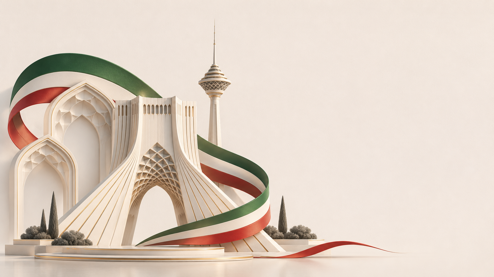
توسعهیافته توسط مهندسین جوان این مرز و بوم.